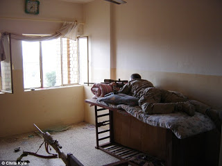
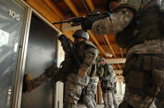

 |
| Chris Kyle as a Navy SEAL sniper in Fallujah, Iraq. |

That
kind of courage, which is conspicuous in danger and enterprise, if devoid of
justice, is absolutely undeserving of the name of valor. It should rather be
considered as a brutal fierceness outraging every principle of humanity. –
Cicero, The
Offices, Book I Chapter XIX
As a sniper with the Navy SEALs in Iraq, Chris
Kyle was shot twice and wounded on several other occasions. He is credited
with 160 confirmed kills. He received several commendations. Of his fierceness
there is no reasonable doubt. Whether his exploits display courage is an
entirely separate question.
American
Sniper: The Autobiography of the Most Lethal Sniper in U.S. Military History, the
ghost-written memoir for which Kyle claims primary authorship, offers
convincing testimony that Kyle not only failed to display genuine courage in
Iraq, but was incapable of recognizing it when it was exhibited by desperate
patriots seeking to evict the armed foreigners who had invaded and occupied
their country.
The insurgents who fought the American invasion (and the few
“allied” troops representing governments that had been bribed or brow-beaten
into collaborating in that crime) were sub-human “savages” and “cowards,”
according to Kyle.
“Savage, despicable evil,” writes Kyle. “That’s what we were
fighting in Iraq…. People ask me all the time, `How many people have you
killed?’... The number is not important to me. I only wish I had killed more.
Not for bragging rights, but because I believe the world is a better place
without savages out there taking American lives.”
None of the American military personnel whose lives were
wasted in Iraq had to die there, because none of them had any legitimate reason
to be there. From Kyle’s perspective,
however, only incorrigibly “evil” people would object once their country had
been designated the target of one of Washington’s frequent outbursts of
murderous humanitarianism.
The insensate savagery of the Iraqi population was
supposedly illustrated by the first kill Kyle recorded as a sniper, while
covering a Marine advance near Nasiriyah in March, 2003.
“I looked through the scope,” Kyle recalls. “The only people
who were moving were [a] woman and maybe a child or two nearby. I watched the
troops pull up. Ten young, proud Marines in uniform got out of their vehicles
and gathered for a foot patrol. As the Americans organized, the woman took
something from beneath her clothes, and yanked at it. She’d set a grenade.”
Kyle shot the woman twice.
“It was my duty to shoot, and I don’t regret it,” Kyle
attests. “The woman was already dead. I was just making sure she didn’t take
any Marines with her. It was clear that not only did she want to kill them, but
she didn’t care about anybody else nearby who would have been blown up by the
grenade or killed in the firefight. Children on the street, people in the
houses, maybe her child….”
Of course, if the Marines hadn’t invaded that woman’s
neighborhood, she wouldn’t have been driven to take such desperate action – but
Kyle either cannot or will not understand the motives of an Iraqi patriot.

“She was … blinded by evil,” Kyle writes of the woman he
murdered from a safe distance. “She just wanted Americans dead, no matter what.
My shots saved several Americans, whose lives were clearly worth more than that
woman’s twisted soul.”
Were Kyle just a touch more literate, he might recognize the
term untermenschen, a German
expression that encapsulates his view of the Iraqis who took up arms to repel
foreign invaders. From his perspective, they were incurably inferior to their
“liberators” and possessed of an inexplicable hatred toward their natural
betters.
For some reason many Iraqis resented the armed emissaries of
the distant government that had installed Saddam in power, built up his arsenal
and apparatus of domestic repression, and then conferred upon the inhabitants
of that nation the unmatched blessing of several decades of wars, embargoes, airstrikes,
disease, and the early, avoidable deaths of hundreds of thousands of children.
“The people we were fighting in Iraq, after Saddam’s army
fled or was defeated, were fanatics,” Kyle insists. “They hated us because we
weren’t Muslim. They wanted to kill us, even though we’d just booted out their
dictator, because we practiced a different religion than they did.”
Actually,
most of them probably wanted to kill Kyle and his comrades because they had invaded and occupied their country. They were
prepared to use lethal force to protect their homes against armed intruders who
had no right to be there. Ironically,
Kyle’s book offers evidence that he understands that principle; he simply
doesn’t believe that it applies to Iraqis.
In one incident described by Kyle, he and several other U.S.
personnel raid an Iraqi home, in the basement of which they discover a mass
grave containing the bodies of several soldiers and Marines. For several
panic-stricken moments, Kyle is understandably terrified by the thought that he
might find the lifeless body of his younger brother, a Marine who had also been
deployed to Iraq.
With obvious and vehement disgust, Kyle cites the “murdered
young men whose bodies we had pulled out” of that basement grave as evidence of
the bestial nature of the enemy. He exhibits no interest at all in the fact
that tens of millions of Iraqis have seen friends and family meet violent,
avoidable deaths as a result of the wars and sanctions imposed on their country
by Washington. Untermenschen,
apparently, aren’t entitled to experience grief and rage – much less the right
to defend their homes and families against aggressive violence.

After returning from his first combat tour in Iraq, Kyle
recalls, he was rudely roused from slumber one morning when the burglar alarm went
off. Although this was a malfunction rather than a real emergency, Kyle’s
reaction was revealing.
“I grabbed my pistol and went to confront the criminal,” he
recalls. “No son of a bitch was breaking into my house and living to tell about
it.”
Why was it “evil” for Iraqis to feel exactly the same way
about the foreign sons of bitches who broke into their country and wrecked the
place?
Later in the book, describing a stalking exercise during his
training to become a sniper, Kyle recounts how he “heard the distinct rattle of
a snake nearby.”
“A rattler had taken a particular liking to the piece of
real estate I had to cross,” Kyle recalls. “Willing it away didn’t work…. I
crept slowly to the side, altering my course. Some enemies aren’t worth
fighting.”
Exactly: The only enemies worth “fighting,” apparently, are
those who aren’t capable of hurting
you when you trespass on their turf.
The Gadsden Flag – featuring a coiled rattlesnake and the
directive “Don’t Tread On Me” – was, and remains, the best symbolic expression
of authentic American patriotism. Genuine American patriots can understand why patriots of other countries would feel similar attachments, and be similarly inclined to repel foreign invaders. This is why they will
never support any war that puts other Americans in the position of killing
foreign patriots who are defending their own homes.
A rattlesnake defending its territory earns Kyle’s respect;
an Iraqi patriot fighting on his home soil with his back to his home and the
face to his enemy, however, is “blinded by evil” and not truly human.
“They may have been cowards, but they could certainly kill
people,” observes Kyle of the guerrillas. “The insurgents didn’t worry about
ROEs [Rules of Engagement] or court-martials [sic]. If they had the advantage, they
would kill any Westerner they could find, whether they were soldiers or not.”
If that charge (made on page 87 of Kyle’s book) is accurate,
it might reflect the fact that the Iraqi resistance (as well as the tactics of
foreign guerrillas who joined the fight) was playing according to ground rules
established by the U.S. early in the war.
On page 79, Kyle describes the Rules of Engagement that his
unit followed when they were deployed to Shatt al-Arab, a river on the
Iraq-Iran border: “Our ROEs when the war kicked off were pretty simple: If you see anyone from about sixteen to
sixty-five and they’re male, shoot ‘em. Kill every male you see. That wasn’t
the official language, but that was the idea.” (Emphasis in the original.)
Those orders were of a piece with the studied indifference
to civilian casualties that characterized the “Shock and Awe” bombing campaign
that began the war. In preparing that onslaught General Tommy Franks and his
military planners were guided by a computer program that referred to civilian
casualties as “bugsplat.” Franks had no compunction about ordering bombing missions
that would result in what the computer projections described as “heavy
bugsplat.” After all, aren’t the lives of American military personnel “clearly
worth more” – to use Kyle’s phrase -- than those of the Iraqi civilians, who
were mere insects to be annihilated?
In one of her occasional contributions to Kyle’s book, his
wife Taya rebukes people who criticize the bloodshed wrought in Iraq by her
husband and his colleagues: “As far as I can see it, anyone who has a problem
with what guys do over there is incapable of empathy.” The trait she describes
isn’t empathy; it’s a variation on the kind of pre-emptive self-pity described
by Hannah Arendt in her study Eichmann
in Jerusalem.
Referring to those who killed on
behalf of the Third Reich, Arendt observed:
“What stuck in the minds of these
men who had become murderers was simply the notion of being involved in
something historic, grandiose, unique (`a great task that occurs once in two
thousand years’), which must therefore be difficult to bear. This was
important, because the murderers were not sadists or killers by nature; on the
contrary, a systematic effort was made to weed out all those who derived
physical pleasure from what they did....”
This was true even of those who
belonged to the SS: Even those in the Reich’s killer elite were not able to
suppress their conscience entirely. Thus the “trick used by Himmler — who apparently was
rather strongly afflicted by these instinctive reactions himself — was very
simple and probably very effective; it consisted in turning these instincts
around, as it were, in directing them toward the self. So that instead of saying:
`What horrible things I did to people!,’ the murderers would be able to say: `What
horrible things I had to watch in the pursuance of my duties, how heavily the
task weighed upon my shoulders!’"
Kyle’s
memoir is remarkable chiefly for the complete absence of the kind of moral
anguish Arendt describes among the SS. Kyle eagerly participated in a patently
illegal and entirely unnecessary war of aggression against a country that never
attacked, harmed, or threatened the United States. He killed scores of people,
terrorized thousands more. As Kyle tells the story, he reveled in the
experience, and regrets only that he wasn’t able to slaughter more of the “savages”
who surrounded him.
During
Kyle’s last deployment to Iraq, his unit – Charlie Company of SEAL Team 3 –
assigned themselves the nickname “The Punishers,” appropriating as their
insignia the Death’s Head logo used by the psychotic comic book character of
the same name.

Interestingly,
a group
of police officers in Milwaukee had exactly the same idea. They
also adopted the “Punisher” logo, which they displayed on their police
vehicles and wore on knitted caps as they prowled the street in search of asses
to kick.
The most memorable exhibition of what they regarded as valor came in
October 2004, when a thugscrum of “Punishers” beset a male dancer named Frank
Jude, who was nearly beaten to death because he was suspected of stealing a
badge.
After throwing Jude to the ground, the Punishers severely
beat, kicked, and choked him – then put a knife to his throat and jammed a pen
into one of his ears. The victim survived the assault, but was left with
permanent brain damage. The officers later claimed that this amount of violence
was necessary to “subdue” Jude – who was never charged in connection with the
incident. The jury in the criminal trial accepted that claim and acquitted the
officers – who were later found guilty of criminal civil rights violations.
| Imperial troops raid a home in Iraq.... |

During his service in Iraq, Kyle occasionally functioned as a law
enforcement officer of sorts. He was involved in dozens of raids against the
homes of suspected “insurgents,” many of whom were arrested on the basis of
uncorroborated accusations by anonymous informants.
He allows that many of the people dragged off in shackles were entirely innocent, but maintains that he wasn't ever troubled by that fact; he was just doing his "duty."
Shortly before the war began, Kyle was part of a SEAL unit
tasked to enforce UNsanctions against Iraq by intercepting tankers leaving the
country with unlicensed oil deliveries. On one occasion, he boarded a tanker
commanded by a commercial sea captain who “had some fight in him, and even
though he was unarmed, he wasn’t ready to surrender.”
“He made a run at me,” Kyle continues. “Pretty stupid. First
of all, I’m not only bigger than him, but I was wearing full body armor. Not to
mention the fact that I had a submachine gun in my hand. I took the muzzle of
my gun and struck the idiot in the chest. He went right down.”
 |
| ... and their domestic counterparts do the same in the U.S. |

If Kyle had been a warrior, rather than a bully, he would
have admired the authentic courage displayed by the smaller, unarmed man who
fought to protect the ship and cargo entrusted to him.
How would he act if the roles were reversed – if he were the over-matched man
trying to defend private property from a group of state-licensed pirates
claiming “authority” from a UN mandate? We’ll never know the answer to that
question, because Kyle’s “courage” is of the sort that only manifests itself in
the service of power, and in the company of those enjoying a prohibitive
advantage over their victims.
Kyle’s “service” continues, even though he’s retired from
the military. He is president of Craft
International, a Homeland Security contractor involved
in training domestic law enforcement agencies. It’s quite likely
that Kyle’s outfit will soak up a considerable portion of the
roughly $1.5 billion dollars the Obama administration seeks to hire military
veterans of Iraq and Afghanistan to work as police, emergency personnel, and
park rangers.
Thanks for your help in keeping Pro Libertate on-line!

Dum spiro, pugno!
301 comments:
1 – 200 of 301 Newer› Newest»Fantastic article, Will. I have noticed that Kyle has been in the news a lot recently with the release of his book, and every story I saw involved media members salivating over him and his stories. You really nail it on the head in your analysis of Kyle's blind unwillingness to imagine what it would be like on the other side of the US Empire. I think if more people imagined that, we'd have many more people on our side. Thank you for everything you do in the service of liberty and our Lord.
Thanks for this Will. Yet/still/another example of the descent into a desensitized military/death culture.....arm in arm(gunstock to gunstock??) with Ceasar-like imperialism. Along with the audio! of the Collateral Damage video, it is sadly evident that the military and its death culture merely represents the civilian death culture....only with cultural and governmental condoning and support. The gushing at the packed bookstore for the display of the book of murder by interested shoppers was sadly disgusting..and disgustingly sad. The conscious rejection of empathy with victims of US Govt murder and the exhalting of the murder and the murdering is a choice that will continue to wreak havoc here in our country and culture..and exceedingly the rest of the world..as we traipse around with the GloboCop Shield with the motto: First Do Harm. Thanks again Will
The intentional making of psychopaths.
Wasn't this the guy who claimed to have knocked out Jessie Ventura when he was on his way to Mexico and couldn't respond?
swiftformark2: Chris Kyle is indeed the same fellow who claimed to have sucker-punched Jesse Ventura in a bar -- and then fled the venue. Kyle insists that this "punch-and-run" tactic is what he was taught in the SEALs. Ventura, who completed SEAL training, insists that this didn't happen, and he's willing to help Kyle "clear his name," given that the story he told didn't exactly leave him covered in glory:
http://www.republicmagazine.com/news/did-navy-seal-sniper-chris-kyle-sucker-punch-jesse-ventura-or-is-he-just-peddling-a-book.html
The rattlesnake has been rattling and warning "Don't tread on me" for well over 2 centuries. It's time to stop rattling and strike.
Chris Kyle is obviously a coward and the worst kind of scum. And completely without any ethical principles. He'd better be careful and change his ways because eventually he will find himself up against a MAN when he isn't the only one armed and backed by his verminous gang.
Scary stuff. Very scary stuff.
Looks like the video gamers are coming of age.
God help us.
"Gadsen Flag" => "Gadsden flag"
Luke.3:14
And the soldiers likewise demanded of him, saying, And what shall we do? And [Jesus] said unto them, Do violence to no man, neither accuse any falsely...
Chirs Kyle is just another product of our increasingly militarized culture of death.
Great article. The old Native American saying comes to mind: "It's easy to be brave from a distance."
Another comes to mind: "Those who live by the sword, die by the sword."
This is the kind of "hero" who will be training the men and women who police your streets.
Enjoy.
Here I was, reading the article, thinking, "God, don't let this guy become a cop." So he's training cops. That explains a lot. That explains how that cop in Akron, the one threatening to execute CCW holders, could exist. Looks like we'll have a lot more of those on our hands.
What a bullying swine! There isn't a trace of humility nor humanity in this soulless bastard. His missus is no better so I figure they're cut from the same worthless cloth. And he's such a trough feeding pig that he comes back to bring terror to the rest of us all the while pimping his evil screed.
"FBI warns of threat from anti-government extremists"
http://www.trust.org/alertnet/news/fbi-warns-of-threat-from-anti-government-extremists/
Well, it looks like Herr Kyles' security sturm truppen may well get put to the test in the Heimat.
Thanks again Mr. Grigg, its so nice to hear a reasonable voice in a sea of lunacy! I love your blog! Keep up the great work, please.
Another excellent post, Will!
You got it wrong traitor2tyranny:
Luke.3:14
And the soldiers likewise demanded of him, saying, And what shall we do? And [Jesus] said unto them, Go kill those damn Iraqis, and accuse them falsely...
traitor2tyranny
the above was a joke of course in case anybody missed the sarcasm. Jesus preached nothing but peace.
This sniper loser is nothing but a fucking mass murderer. He is a piece of worthless dog shit and I hope one day he gets what is coming to him. What a fucking asshole. I have more respect for a fucking serial killer who actually braves law enforcement interception at home than a cowardly piece of shit who hides behind the president's orders and goes and blows the skulls of hundreds of people apart from a distance. What a puny small dicked murdering faggot.
If we're going to deservedly berate the cowardice of arms-length soldiers like Chris Kyle, let's not forget to upbraid the most courageous of America's "warriors": those brave video-fighters in uniform who, comfortably ensconced in stateside cubicles armed with joysticks, direct drones to rain down armaments from on high on "evil-doers" half a world away.
Quasimojo -- As you wish:
http://freedominourtime.blogspot.com/2011/07/imperial-priorities-obedience-first.html
I noticed on page 112 of the book American Sniper a reference to gang members on a Navy ship causing problems, which problems were subsequently solved by Seal members who were on that ship.
Armed gangs (numbers estimated at over 1.4 million and increasing daily - http://www.rightsidenews.com/2012012315454/us/homeland-security/14-million-gang-members-in-the-united-states-and-growing-daily.html - are engaged in a plethora of crimes and criminal enterprises in the U.S.) are now receiving combat training and likely stealing combat equipment - courtesy of the U.S. Military.
It's interesting that Kyle doesn't get the distinction between government-supported gangs and the "illegal" type.
As long as one is "just following orders" anything goes...
Excellent article. Thank you.
Imagine for a second, that there really is a God.
"Anonymous said...
Imagine for a second, that there really is a God.
February 8, 2012 11:43 AM"
Look mommy, a troll! "don't feed it son"
:)
WayneB
"Anonymous said...
Imagine for a second, that there really is a God.
February 8, 2012 11:43 AM "
I tremble for my country when I reflect that God is just; that his justice cannot sleep forever. - T. Jefferson
Excellent writing, Mr Grigg, expressing the only sane review of this critter Chris Kyle's snuff porn book.
It reminds me of the wisdom of the late great G.K. Chesterton who noted that a true patriot not only loves his country, he recognizes the right of the other fellow to also love his own country as well.
And this Kyle guy reminds me of another "brave" Seal book scribe, Marcus "Lone Survivor" Luttrell. Tough guy Marcus proudly went to Afghanistan to kill on command people who posed no threat to America or, more importantly, no threat to him or his (and don't give me any 911 BS. Until someone can produce just one piece of evidence that the Afghani people had anything to do with 911 I ain't buying it!)
Yet when after Lutrell got back to Amerika and some punks shot his dog just for kicks and giggles Marcus called the cops. Credit should be given to Marcus because he did indeed chase the punks down in his car. But what did this "kick-ass and take names" badass do when he got face to face with the people who actually caused him and his harm? He turned them over to his fellow state sanctioned costumed drones.
Anyone can be a tough guy if they are given permission and impunity by the State.
Hitmen for the banksters are NOT heroes. They are at best only sad...
"Anonymous said...
traitor2tyranny
the above was a joke of course in case anybody missed the sarcasm. Jesus preached nothing but peace.
"traitor2tyranny
the above was a joke of course in case anybody missed the sarcasm. Jesus preached nothing but peace."
What a relief! I thought we had the modern kind of "evangelical" on the comment thread there for a minute. ;)
How nice it would be if they all had just been joking and had corrected their murderous pro-preemptive-war preaching right away.
As I have mentioned and re-interated, it's time that this country is broken up.
Anon 9:37, gangbanger presence in the military is nothing new. I remember back in the late '70s and early '80s, during my own misguided years as a seagoing legionnaire, that on at least two U.S. Navy ships on which I spent time, the NCIS sent agents to investigate reports of drug dealing, extortion, and one official "suicide" that eyewitnesses claimed to be murder, all alleged to have been committed by sailors who were affiliated with Chicago's Black Disciples and the Crips. Of course since these incidents involved Black sailors and since the days of open racial violence in the Navy weren't far past, the commanders of both ships went out of their way to obstruct the NCIS's investigations into the gang connections to these crimes. While the "suicide" was indeed later ruled a homicide and at least two sailors were courtmartialed for it, there was never any mention in the proceedings of gang involvement.
You do make a valid point, however, that gang activity in the military over the last ten years has risen sharply. I cannot believe that the military is oblivious to this. Indeed, I strongly suspect that some of the puppeteers within the more insidious alphabet agencies are deliberately encouraging a gangsta presence in the military, these gangstas being, in the minds of said sick manipulators, the nuclei of several paramilitary-style criminal elements that can be co-opted and manipulated by the feds in the future.
On the other hand, and on the plus side, having "official" gangbangers of PoS Kyle's stripe at war against "non-sanctioned" gangbangers amongst the legion's rank and file does nothing but undermine morale and discipline, which is altogether a good thing to us freedom lovers.
@Liberanter. I believe the whole point of recruiting gang members INTO the military is that once these desensitized robots reenter the general population they'll be just that much more "angry" and also that much more capable of causing criminal mischief. This then dovetails into the security "organs" desire to further militarize the policing tentacles to combat this homegrown problem. Oh so clever and oh so very evil.
Charles Whitman reconciled.
cheers
MoT, you're probably right. I do wonder, however, if this is one instance in which the PTB have overplayed their hand. Once they create these "gangstabots" who, presumably are not only going to be proficient with combat-grade weapons once they become "civilians" again, but who will probably join criminal organizations that will have full access to them, it's going to be a case in which the fedthugs are going to have met their match. Assuming that there's a genuinely adversarial relationship between "official" and "unofficial" gangs (which we have reason to doubt), the feds might be in for a real uphill battle.
Correction, It was John the Baptist.
Luke.3:14
And the soldiers likewise demanded of him, saying, And what shall we do? And [John the Baptist] said unto them, Do violence to no man, neither accuse any falsely...
Mellow Greetings Will, i was wondering if you ever had the oppurtunity to look over one of the best books i have ever come across?
found here> http://www.bornagainclassics.com/letterstojessica/jessica.html
I guess we should celebrate the patriots in Syria right now who are mowing their own citizens down like bugs. Surely we can figure out a way to blame the U.S. for this as well.
On his tombstone:
Chris Kyle. Degenerate.
I bought and read this book because I was interested in Kyle's perspective. His demonizing of the Iraqis was disappointing, a crutch for his actions, and I would of expected a more intelligent and unbiased assessment of his opponents than this.
Overall I took him for a narrow-minded bully, unable to see perspectives other than his own. He revels in being a big, bad frogman and often describes the escapades that he was able to get away with due to his status. I had expected a memoir of a battle tested and mature warrior. Instead I found a braggart's self-aggrandizing war stories.
Thanks for this article.
I don't follow controlled media, but this guy's story is popping up all over on the internet. I ignored it because it stunk like a skunk from the start. Now - your review and commentary prove that my suspicions were correct.
This guy is a cold-blooded psycho - product of an extremely dysfunctional society (e.g. evil = those who reject the crass materialism, cheap, shallow entertainment (which is the core of life for most in USA now)...).
More disturbing - is that the controlled media is hyping this guy as a "hero", the "new American hero" cold-blooded, psychopath happily and righteously murdering for the war profiteers and the racial-supremacist neocon agenda (i.e. demonizing, dehumanizing the entire Muslim world - in order to establish their NWO, with HQ in Israel).
This guy is probably chompin at the bit to try out his skills on all the "evil" people (everyone not like him and his) in the USA.
Is this guy really the "best" America can produce these days?
FUBAR x 1000
no offense to anyone, and no defense to chris kyle, but...
1. you said he's not courageous because he engages enemies at a distant, yet he's a sniper and is trained to do so. meanwhile we (at a safe and almost anonymous distance)are here cussing and insulting him and other military who sacrifice their lives (not necasarily in this war but in general) for our country, rights, and liberty.
2. wether or not he is good at understanding how the "savages" feel, we are obviously not good at understanding how him and the other armed forces from all over the world feel as they go through crap to keep their families back at home safe.
3. "be the change you want to see in the world" if you truly believe that he's doing it the wrong way, stop kicking the dust, and start walking. enlist, serve your country, and show everyone how to do it the wrong way.
... again im not trying to be rude or cause anymore quarreling, just trying to be respectful to both sides of the same earth.
no offense to anyone, and no defense to chris kyle, but...
1. you said he's not courageous because he engages enemies at a distant, yet he's a sniper and is trained to do so. meanwhile we (at a safe and almost anonymous distance)are here cussing and insulting him and other military who sacrifice their lives (not necasarily in this war but in general) for our country, rights, and liberty.
2. wether or not he is good at understanding how the "savages" feel, we are obviously not good at understanding how him and the other armed forces from all over the world feel as they go through crap to keep their families back at home safe.
3. "be the change you want to see in the world" if you truly believe that he's doing it the wrong way, stop kicking the dust, and start walking. enlist, serve your country, and show everyone how to do it the wrong way.
... again im not trying to be rude or cause anymore quarreling, just trying to be respectful to both sides of the same earth.
we (at a safe and almost anonymous distance)are here cussing and insulting him and other military who sacrifice their lives (not necasarily in this war but in general) for our country, rights, and liberty.
No military venture in my lifetime has had anything to do with protecting our country, and the only threat to my rights and liberty is the government served by the U.S. military.
if you truly believe that he's doing it the wrong way, stop kicking the dust, and start walking. enlist, serve your country, and show everyone how to do it the wrong way.
There is no "right" way to murder people on behalf of the State, and the only way to serve our country is to fight the State that is killing it.
"The number is not important to me..." Except of course that you are pimping out that number! It's the whole freaking selling point of your book. Thinking is not this man's specialty.
What a coward. Unfortunately the United States military is full of people of this man's mentality. They are billy badass when they are over there with all the guns, body armor, close air support, and night vision goggles. But once they they get home they are the biggest pussies around. They worship authority.
That man is truly scary his method of thinking is reminiscent to the people who lived in imperial rome or most empires who believed rome was great all powerful civilized and any evil it did was justified. Anyone not roman is a savage.
Very good review sir.
The mans behavior is very reminiscent of roman empire people behavior. We are great, powerful and in the right everyone else is a savage and deserves to be a slave.
The man attitude to killing is also scary real soldiers are haunted by what they do but this guy seems to be in we are better than anyone else crew.
You all do realize that the man that you are insulting and calling inhumane is doing something that none of you could ever do? As to the April 30th Anon I would like to point out that Mr. Kyle is not in the we're so awesome group, (paraphrase) but the we're in this war the more people I kill the less of the people fighting next to me will die. Would you protect your friends? Your family? Obviously not your country since you seem to hate it so much.
Please if someone was there the day he killed that woman please step forward and give your account of the events until then either take his word that most of the people would have died if she had pulled that pin or just dismiss it as a moot point.
Remember that these soldiers that are you are attacking for doing there jobs are the only thing standing between you and death if the United States is attacked on it's own soil. Admittedly not likely because as you say we have dedicated killers to deter that attack.
If you don't agree with my point of view, that's too bad there's nothing you could say or do that would convince me that I am mistaken. Also if you don't agree, oh well I'm not trying to say that you should change your opinion and I'm not trying to change it. Just give you and other point of view.
You all do realize that the man that you are insulting and calling inhumane is doing something that none of you could ever do?
You mean heroic deeds like gunning down women at a distance, and bull-rushing smaller, unarmed men while packing weapons and clad in body armor?
That woman -- a patriot who loved her country -- had every moral right to kill the foreigners who had invaded it, just as we would have the right to do likewise if our country were attacked by a foreign aggressor.
Spare us the tired homilies about the supposed valor and virtues of that government's swaggering, costumed minions. The only people who threaten me and my family are those who have volunteered to become the enforcement arm of the foul, despicable government that afflicts the country I love.
Chris Kyle was held up at gunpoint at a gas station by two men both holding pistols. He calmly reached into his truck to pretend to grab his keys but quickly reached into his waistband, pull out his 45 pistol ad fired two into each mans chest. Took less than 10 seconds according to security camera. How's that buddy?
How's that? Irrelevant. Someone trained to murder is probably going to be pretty good at self defense.
"The only people who threaten me and my family are those who have volunteered to become the enforcement arm of the foul, despicable government that afflicts the country I love." - William N. Grigg
You can't Love your country William; really. So I say to you, don't call anyone for help when you need it... and be afraid; very afraid.
Have a nice day.
So it's a matter of "America: Love its government-licensed sociopaths -- or leave it," right?
I don't need or want such "help." I've never asked for it, I don't condone it, and I'm not only happy but eager to live without it.
If I were afraid, I'd cling to that regime with the same infantile devotion displayed by slogan-spewers who defend its bloodshed and corruption.
Most of you are really sick twisted individuals. If you can't understand what these SEALS do that's unfortunate. It must feel nice criticizing them from the veil of the Internet and safety of your home. You are the cowards. Starting with the author.
You are the cowards. Starting with the author
... insists a bold, intrepid badass from behind the shield of anonymity.
As everyone knows, only incorrigible cowards publicly condemn violent people accustomed to killing with impunity. Think about it, if you have the capacity to do so.
I stumbled onto this website but I can assure you I most certainly will not be back. 90% of the comments are from uninformed idiots that took parts of the book to make Chris and the rest of the SOF community evil. He was not mowing down poor innocent civilians without consideration. He was was killing foreign born insurgents, native born insurgents, and Al-Queda fighters. In essence, he was doing his job. Protecting AMERICAN lives. The man is a hero. POINT BLANK! Lest you forget the enemy had snipers as well. Is Chris the only bad guy in this situation? Bottom line...It is ok to disagree with our political reasons for being in Iraq, I will stipulate that point. But how dare you sit behind your computer and denegrate the unbelievable valor of our armed services! If you hate this country that much, you are free to leave. Although I am sure you are all too busy enjoyed the freedoms that are offered by those who have served before you. Maybe one day you will walk into a bar and bump into Chris Kyle. One can only hope!
[Kyle] was doing his job. Protecting AMERICAN lives. The man is a hero. POINT BLANK! Lest you forget the enemy had snipers as well.
Snipers in Iraq were a threat only to Americans who had invaded that country illegally. They had every moral and legal right to use force to compel invaders to leave. Kyle's role was akin to that of a lookout for a gang carrying out a home invasion robbery. There was nothing valorous or praiseworthy about it.
Is Chris the only bad guy in this situation?
When he took lives in the service of an illegal war waged by the government claiming to rule us, he was the bad guy whose actions were of greatest concern to us.
If you hate this country that much, you are free to leave. Although I am sure you are all too busy enjoyed the freedoms that are offered by those who have served before you.
Murdering Iraqis on behalf of the government that steals my wealth and threatens my live did nothing to protect or enhance what freedoms I still exercise. Hating that government and its crimes is a patriotic exercise.
Maybe one day you will walk into a bar and bump into Chris Kyle. One can only hope!
I don't waste my time in bars, but if I ever meet Kyle I will tell him exactly what I think of his actions. If he decides to assault me for doing so, that's his choice -- but I doubt he's the type who'd engage in a stand-up fight: Given the actions he describes I suspect he'd wait until he could shoot me from the safety of a sniper's nest a considerable distance away.
"If you hate this country that much, you are free to leave."
Oh, good! The mating call of the Yellow-bellied, puffed-chest copsucker! I hear that desperate mating call, in several variations, so often in response to the fear-inducing (to that particular species, anyway) call of liberty.
Did our forefathers use women and children as human shields as they fought for our independence? Did they use drugs to bolster their meager courage and physical prowess to fight a superior enemy? No. According to the British army, they "fought dishonorably". Using ambush tactics and their knowledge of the terrain to their advantage. These tactics are the standard combat methodology of the underdog and the men who use them can generally be considered courageous. But the men chris kyle fought in his books take dishonorable fighting to an unforgivable level.
While I acknowledge that all of you are entitled to your own opinions, my opinion is that this article is the epitome of ignorance. The people of Iraq and Afghanistan have been oppressed by religiously extreme governments for decades. A country's government is sworn to protect its people with all the power and resources its organization can bring to bear. Instead, Sadam Hussain and the Taliban used their power to torture, kill and subdue the population. Further, these governments were devoted to the genocide of certain groups of their population simply because they were a different religion. That is the evil that Chris Kyle talks about in his book and he fought the men who were fighting to keep that institution standing.
While "due process" did not give us any legitimate reason to be in these countries, Sadam and the Taliban needed to go. Period. There is no place for people like that in this world. The people who would fight to keep these inhuman arrangements as they are, are not the courageous patriots you seem to think. These "men" would drug themselves up with amphetamines and epinephrine to bolster their courage and make them fight until their bodies were not physically able to do so. Men who cannot fight with sound mind body and spirit are not courageous. These "men" use women and children, their wives and babies as human shields. they would stoop so low as to hold a baby in one hand and a rifle in the other and attack our soldiers because they knew our rules of engagement would not permit us to fire on them. These are the actions of subhuman, hateful evil facsimiles of human beings.
Many of these fighters were not even local. Many were foreign jihadists. People of the same ilk as Osama bin Laden. (Remember that guy who mounted an attack on American civilians, who was recently shot in the face by our good friends the navy seals?) These terrorists are hell-bent on taking not just American lives, but the lives of any person that does not believe in their twisted view of their holy scriptures.
Again, you are entitled to your own opinions, but by elevating and humanizing these terrorists, you impugn the honor and courage of all soldiers. Not just Chris Kyle.
the men chris kyle fought in his books take dishonorable fighting to an unforgivable level.
Do you mean that they dropped 1,000-pound bombs on residential neighborhoods, or hurled cruise missiles from ships stationed hundreds of miles away, or conducted missile strikes by remote-piloted drones controlled from air-conditioned command centers in Nevada?
Sadam Hussain and the Taliban used their power to torture, kill and subdue the population.
Those bastards! How DARE they do such things?!? That's AMERICA'S job, dammit!
While "due process" did not give us any legitimate reason to be in these countries, Sadam and the Taliban needed to go. Period.
They certainly did -- but it was neither the job nor the privilege of the government that had installed Sadam (sic) and propped him up for decades (using him as a cat's paw in a war of aggression against Iran in the process) to invade the country and kill hundreds of thousands in order to replace him with a government that is morally indistinguishable from the one he had run as their subcontractor -- and then inflict similar "blessings" on Afghanistan.
The people who would fight to keep these inhuman arrangements as they are, are not the courageous patriots you seem to think. These "men" would drug themselves up with amphetamines and epinephrine to bolster their courage and make them fight until their bodies were not physically able to do so.
First of all, few -- if any -- of the people fighting against the invasion of Iraq were motivated by loyalty to Saddam; they were animated by the entirely commendable hatred for foreign invaders. Even loathsome people are susceptible to that impulse.
Secondly -- could you possibly be captive to ignorance of such magnitude that you are blind to the pervasive use of amphetamines and other drugs by U.S. military personnel in Iraq and Afghanistan? If so, here's a good place to begin your rudimentary education on that subject --
http://articles.latimes.com/2012/apr/07/nation/la-na-army-medication-20120408
Key quote:
"After two long-running wars with escalating levels of combat stress, more than 110,000 active-duty Army troops last year were taking prescribed antidepressants, narcotics, sedatives, antipsychotics and anti-anxiety drugs, according to figures recently disclosed to The Times by the U.S. Army surgeon general. Nearly 8% of the active-duty Army is now on sedatives and more than 6% is on antidepressants — an eightfold increase since 2005."
These "men" use women and children, their wives and babies as human shields. they would stoop so low as to hold a baby in one hand and a rifle in the other and attack our soldiers because they knew our rules of engagement would not permit us to fire on them. These are the actions of subhuman, hateful evil facsimiles of human beings.
Oh, are you referring to the airtight "rules of engagement" on display in the incident chronicled in the "Collateral Murder" video -- you know, the episode in which some of our valor-drenched heroes in uniform, oh may their praises be chanted forever, opened fire from a helicopter on a group of unarmed Iraqis, including children -- and then blamed the civilians for being on the receiving end of American ordnance?
I've yet to discern any evidence of "honor" in Chris Kyle. Any soldier possessed of a scintilla of honor wouldn't be guilty of involvement in the world-historic crime that is the war in Iraq.
Bwahahahahahahahahahahahahaha!
Oh, aren't you all precious! Bunch of posers and wannabe's criticizing a Navy SEAL who protects your right to be posers and wannabe's. :) Classic!
Bwahahahahahahahahahahaha!!!
Oh, man, your sooooo funny! "I'm a big tough critic of SEALs from my parents basement - take that you honorless SEALs!"... BWahwhahahahahahahahahahaha!
"World Historic Crime"? Bwahahahahahahahaha! Big words for a seventh grader! Wow, do you feel important now? "I'm a blogger! I'll be the next wikileaks hero!" Bwahahahahahahahahahahahahahaha!
"It's George Bush's fault!!" Bwahahahahahahahahahahahahahahaha!
oh, ok - c'mon- lets see some more of your comments! These are great!
This essay was published about seven months ago, Mr. Anonymous @ 10:20. I gather that your tardiness reflects the fact that your lips move while you're reading.
You really need to update your inventory of derivative ridicule, given that the "mother's basement" line is of the same vintage as the kiddie porn VHS cassettes that no doubt litter your studio apartment.
You really ought to consider this, as well: If, as you insist, blogging is a past-time for "wannabes," how should we look upon people who ridicule bloggers from behind a cloak of anonymity?
A soldier is not meant as a tool of compassion upon its enemy but of execution to uphold its nations laws. Very well written article, but you blame the knife for having a sharp edge. Ultimately the freedoms you enjoy here today is because of the effort of our soldiers. So maybe instead of taking a critical outlook on the tools we use you should gather your resources for the hand that wields them.
The "knife", in this case, bears full responsibility for its actions because it is supposedly sapient- it is conscious, at the least. Yes, the hand that wields the tools is greatly responsible and should be chopped off if it refuses to stop being an aggressor, but the tools choose to be tools and choose to do wrong when they are capable of refusal. The refusal will cost them, but- once again- this is a position they have put themselves in to.
Mr Grigg , i know that i am late to your topic on chris kyles book ,but i just wanted to add a few things . I was in the first Persian Gulf war as a medic and i do not really care for that part of the world ! i was wondering if you have ever been to the middle east ? one of the things that is great about this country is that for the most part you can have an opinion , im not sure how many countries you could say the same about . i am half-way through Mr kyles book , but i am a bit confused as to why you seem to hate on him so much ,because of the fact that he was very good at his job ; or that he was trained very well . Quote ( do not condemn the judgement of another because it differs from your own. you may be both wrong .) Quote ( circumstances cause us to act the way we do . we should always bear this in mind before judging the actions of others , Thor Heyerdahl ) . remember that Mr kyle was already a seal before the wars started .
I have spent time in the Middle East, and the experience left me ambivalent. There was much to like about the people I met, apart from those in positions of "authority" -- but that's true of practically any part of the world, I would imagine.
My sentiments toward Kyle cannot accurately be described as "hatred." If he hadn't become a hired killer on behalf of an irredeemably corrupt government, and then boasted of his accomplishments in that role, he wouldn't have come to my attention.
Kyle was good at a morally indefensible job; in what sense does that merit admiration? As part of an invading army that illegally occupied a practically helpless country that had done no harm to us, Kyle -- as I've pointed out -- was the moral equivalent of an armed robber.
Glad all you woossies are not protecting the country. If you had been, we would all be in a terrorist death room waiting for our heads to be cut off.
Actually, it's critics of the Regime ruling us, rather than the armed goons who work on its behalf, who are actually protecting the country from the only serious threat to what remains of our liberty and prosperity.
This article is just some anti-war bullshit. I think the man is a true American hero and I bet any money you would never risk your life to go and fight for our country.
This article is just some anti-war bullshit. I think the man is a true American hero and I bet any money you would never risk your life to go and fight for our country --
--sneers yet another boldly anonymous jock-rider borrowing the supposed glory of an individual who specializes in killing --from a safe distance -- people who have done nothing to harm or threaten our country.
My variety of "anti-war bullshit" is broadly comparable to that of James Madison, who described war as the "greatest" of "all the enemies of public liberty." Fighting for the government that rules us is decidedly not the same thing as fighting on behalf of the country, especially when this involves -- as it always seems to -- invading smaller, helpless countries that haven't harmed us and pose no plausible threat.
As someone who would eagerly fight to protect my home, family, and loved ones from all enemies foreign and domestic, I honor those who risk their lives to kill foreign invaders. That description doesn't fit Chris Kyle, does it? It does, however, fit many (if not most) of the people he killed.
Will, this article is powerful in its ability to attract morons and idiots- and then cause them to expose themselves! (Even though most of them are too cowardly to do it other than anonymously.) This means it is probably one of the most awesome things ever published on the internet. It's a gift that keeps on giving.
Thank you for your TRUE courage and your REAL service to America- so unlike Kyle and his verminous supporters.
And there weren't any wars in the Bible either. Except when David invaded Goliath' s homeland and killed him like a coward. That's sarcasm
On your tombstone "American by birth, Coward by choice...
... because only cowards condemn heavily armed, government-licensed bullies and killers, just as true heroes invade small, over-matched countries and kill women from a safe distance, correct?
The David vs. Goliath parallel doesn't exactly favor the case you're trying to make: How is the "World's Sole Remaining Superpower," which spends more on the military than practically the rest of the world combined, the "David" in this scenario?
Stumbled on this by accident. I am saddened to see that you live in this country Mr. Grigg. Along with the other morons whom support and posted this website. I agree with one thing, we should not be there anymore, we should let the whole place continue down the path to nowhere and nothingness. You talk alot about killing from a safe distance. What is your stance on IEDs, suicide bombs, minimizing collateral damage, using women and children as shields and finally the Geneva convention, ya know beheading and stuff like that. Your article is vacant of any opinion that would suggest you are anything but an ungreatful, unamerican that does not comprehend freedom, democracy, womens rights, you know that basic stuff you take for granted. Go spend a couple years in Iran, hang out. Better yet go to Iran and post antigoverment extremist rants that will be a hoot. We are not perfect but at least we keep trying, Move out A-hole.
I am saddened to see that you live in this country Mr. Grigg.
As am I, since I would much prefer the relatively free version of America that existed when I was younger.
I agree with one thing, we should not be there anymore...
-- which means we shouldn't have been there in the first place, correct?
What is your stance on IEDs, suicide bombs, minimizing collateral damage, using women and children as shields and finally the Geneva convention, ya know beheading and stuff like that.
I am uniformly opposed to all aggressive violence committed by anybody under any circumstances. As an American I am morally responsible only for such crimes of that kind committed in my name.
Furthermore, I recognize the universal right of people -- whether Americans or not -- to use lethal defensive force to repel an invasion. Attacks against U.S. military personnel who have invaded another country fit that description. This is why -- are you paying attention? -- Americans shouldn't invade and occupy other countries.
Your article is vacant of any opinion that would suggest you are anything but an ungreatful, unamerican that does not comprehend freedom, democracy, womens rights, you know that basic stuff you take for granted.
Your reply is the product of someone who displays an antipathy toward logic, cogency, and the proper use of punctuation and spelling.
Anonymous' post lets me shout "Bingo!" with his "Move out..." comment.
It's obvious that the person that wrote this and the people who have commented on this piece have 1, never been in war & 2, have never met Chris Kyle. It's easy to judge man who's shoes you have not walked in.
I'll never walk in the shoes of a hired killer of any description; does that mean I'm forever disqualified from writing critically of their crimes?
There is no point in continuing this argument. These people are obviously ignorant and thus not worth wasting your words on. But please, continue on talking trash about our military. You know, the guys that gave you that right. Yea, those guys.
There is no point in continuing this argument. These people are obviously ignorant and thus not worth wasting your words on.
Forgive me -- was there an actual "argument" going on here? One of us was engaging a subject employing reason; the other was spewing sterile slogans and engaging in adolescent posturing. If you'd like to have an actual argument sometime, feel free to let me know.
But please, continue on talking trash about our military. You know, the guys that gave you that right.
That right is mine by nature; it's not the gift of some ruling elite and the people who are foolish enough to work as the regime's hired killers. It's my right to claim, and mine to defend. I neither need the "help" of the people you describe, nor am I grateful for the supposed services they render.
You are exactly what is wrong with this country. All you do is 'write' about things in which you have not actually seen for yourself. How can you make judgements when you were not there? You cannot. Do you have any idea what it takes to put on the uniform and fight for this country that we live in? For that matter to become a Navy SEAL? Once again..NO. As it looks you cant even keep yourself in shape. All you do is sit there and complain. Shame on you.
I would be more than happy to meet you sometime. You can sit behind a computer screen and write. Why not meet up in person and talk? I mean you impress us all with your writing skills. Can you express yourself verbally?
All you do is 'write' about things in which you have not actually seen for yourself. How can you make judgements when you were not there?
I wasn't at Sand Creek, Washita, or any of several hundred other "battles" in which supposedly heroic men in Army uniforms slaughtered defenseless Indians -- engagements now denounced as criminal atrocities.
Are those of us who condemn those crimes being presumptuous because we weren't there? Are the rules of moral conduct suspended when we're contemplating acts of killing carried out by people wearing government-issued uniforms?
I would be more than happy to meet you sometime. You can sit behind a computer screen and write. Why not meet up in person and talk?
I'm not difficult to find. Maybe we can meet at a gym somewhere. :-)
It's clear that this is a scum sucking hippie bullshit blog and the rest of you tree hugging losers should get the fuck out of the country. Bitch.
Trees are best used for baseball bats, and Americans who genuinely love this country should avoid invading others. If you want me to leave, you're going to have to throw me out. Cheers!
Surely, Ms. "US FOREVER" is being facetious. No one could really be that ignorant in real life, could they?
localhero100 said...
On his tombstone:
Chris Kyle. Degenerate.
This "man" doesn't deserve a tombstone.
Youre talking about a totally different aspect of war? So the 'slaying of defenseless Indians' is the same as killing armed Iraqis? By the way I think the proper term is Native Americans. With your wide base of knowledge you should know that! C'mon man!
P.s. I cannot wait for your response I love how you over power us all with your writing skills. It really is amazing
Youre talking about a totally different aspect of war? So the 'slaying of defenseless Indians' is the same as killing armed Iraqis?
Since the invasion and occupation of Iraq constituted an act of illegal aggression, it really doesn't matter whether the Iraqis were armed or not. If an armed robber kills an armed homeowner, the killing is an act of murder, not of self-defense.
Countless unarmed Iraqis were killed as part of the "liberation" of that country from Washington's vile subcontractor. This includes, but is hardly limited to, the several hundred thousand children who died from hunger or disease during the twelve-year embargo of that country following the first Gulf War.
The U.S. Army has never disavowed the Medal of Honor citations it handed out like party favors following the Wounded Knee Massacre, or the commendations it bestowed during the murderous campaign against Filipino independence during the following decade. Its achievements in Iraq are of a piece with those purported feats of valor.
By the way I think the proper term is Native Americans. With your wide base of knowledge you should know that!
If you'll consult my photograph you should understand that I'm not laboring beneath the burden of "white guilt." I've long assumed, along with the late Russell Means, that the term "Indian" is entirely suitable. After all, a "native American" is someone who is born here, irrespective of ethnic origin.
You people are what is wrong with America. Calling Chris Kyle, an American soldier a coward. Someone who has gone to war, regardless of weather YOU think we had any business ring there is unimportant, any soldier that kills the enemy is a hero. Any man, woman, or child that tries to take the life of an American soldier has the full right to know what it is like to be put to sleep permanently. You pro life, terrorist sympathizing assholes should be deported to a country full of American hating extremists like Yemen, Syria, Afghanastan, Iraq and I am sure it wouldn't be long after witnessing your first decapitation that your liberal peace loving views changed abruptly. Your online garbage newaletter and the people that read your vomit are no better than the enemy. I got here Googling Chris Kyle purely by accident and I have today I am deeply saddened that assholes like you exist here is the USA. I find it fascinating that liberal POS like those here love to live here in the USA and enjoy the greatness she ha to offer but then criticize the very system and reasons we are the greatest nation on earth. HIPPOCRATES that is all you people are, if you don't like the way, the means by which and the reasons the USA is what it is, the land of the free and home of the brave like Chris Kyle or any other soldier that has put their life in harms way for their country, then GET THE FUCK OUT! Go join Al Queda or Hamas and let your actions speak by raising arms against the country you hate, this would be ideal....this way our soldiers have a reason and right to execute every last one of you. You fucking parasites.
You people are what is wrong with America. Calling Chris Kyle, an American soldier a coward. Someone who has gone to war, regardless of weather YOU think we had any business ring there is unimportant, any soldier that kills the enemy is a hero. Any man, woman, or child that tries to take the life of an American soldier has the full right to know what it is like to be put to sleep permanently. You pro life, terrorist sympathizing assholes should be deported to a country full of American hating extremists like Yemen, Syria, Afghanastan, Iraq and I am sure it wouldn't be long after witnessing your first decapitation that your liberal peace loving views changed abruptly. Your online garbage newaletter and the people that read your vomit are no better than the enemy. I got here Googling Chris Kyle purely by accident and I have today I am deeply saddened that assholes like you exist here is the USA. I find it fascinating that liberal POS like those here love to live here in the USA and enjoy the greatness she ha to offer but then criticize the very system and reasons we are the greatest nation on earth. HIPPOCRATES that is all you people are, if you don't like the way, the means by which and the reasons the USA is what it is, the land of the free and home of the brave like Chris Kyle or any other soldier that has put their life in harms way for their country, then GET THE FUCK OUT! Go join Al Queda or Hamas and let your actions speak by raising arms against the country you hate, this would be ideal....this way our soldiers have a reason and right to execute every last one of you. You fucking parasites.
Any individual who fights against foreign invaders is a patriot. Any soldier who takes part in an invasion is an aggressor. There is nothing patriotic about promoting or participating in aggression, and nothing courageous about killing patriots who are defending their country.
In explaining this I am making the generous assumption that your capacity for logical thinking is marginally better than your mastery of grammar and spelling. This may be a forlorn hope, but I believe in miracles.
Pity the nation that raises not its voice
Except to praise conquerers
And acclaim the bully as hero
Fine work responding to all of the comments.
This article is a despicable indictment of a man far better than you. You seem to lack a fundamental understanding of why we were in Iraq in the first place. If potential possession of nuclear weapons by a renegade dictator isn't simple enough for you do understand, look at it this way: you are given reason to believe that it is more than likely you have cancer. Would you choose to have the situation examined, or wish away negative possibilities until it was too late.
You are an ignorant fucking coward and don't deserve in the least the distinct privilege of calling yourself an American.
You are an ignorant fucking coward and don't deserve in the least the distinct privilege of calling yourself an American.
What a potty-mouthed child! Do you kiss Chris Kyle's ass with that mouth?
I'm an American by right, not "privilege" -- and certainly not because of anything done by government-hired killers of women in countries that posed no threat to us.
I grant I can't regurgitate pre-digested soundbites quite as readily as you do. As a resident of the reality-based continuum I simply have no use for such a dubious skill. At the time of the '03 invasion, Saddam was not a "renegade"; his nuclear program no longer existed (a fact known by Washington several years earlier), he was cooperating with invasive UN inspections, and his country was carved up into U.S. and British-enforced "no-fly zones."
The U.S. government attacked and invaded Iraq not because it was a threat, but precisely because the regime was harmless. That's Washington's way: It only picks fights with smaller powers over which it has a prohibitive advantage. I will admit that Kyle is a suitable embodiment of the kind of "courage" required to kill on behalf of a government like that.
Once again I must take note of the fact that I have been accused of cowardice by a jock-riding slogan-spewer who takes shelter in anonymity.
Once again we have an anonymous dunderhead calling a man of real courage a "coward".
And exposing his complete ignorance for everyone to see.
And then exposing himself as a nationalist on top of everything else. This is why I love Mr. Grigg- he brings out the worst in the Nazis and allows them to expose themselves.
Kyles not a coward but something far more dangerous and scary a the type off "soldier" i use this word lightly that has no empathy for any one that isn't down with his regime. The all mighty all just american empire
the same as roman soldier back in the day same as nazis and tons of other imperial powers.
as for picking fights with small countries thats done by every empire name me one that has the balls to fight someone equal or greater in power. i doubt youll find many
I have a dear friend who was in Kyle's shoes at one point. He and all his crew have told me countless times it's all a joke. Killing in the name of nothing. They all deeply regret what they have done and will gladly tell you so. They were hung out to dry during a trial brought upon them due to the orders our government leaders gave them. These men are twisted into machines. Our government creates these drones to pin their shit on. As i read and see you couldn't do what he has done blah blah blah go check your local gun ranges. Thousands of people can shoot massive distances. Flock to your glorious misguiding president you sheep and you my friends will reap what you sew. Learn to stand alone or you will fall. I do not condone killing but will protect whats mine. - DON'T TREAD ON ME!!!!!!!!!
Here's an update to Mr. Grigg's excellent commentary. It's being reported that Chris Kyle has been shot to death at a gun range in Texas. It couldn't have happened to a more deserving person.
Listen closely and take note all you nasty, socialistic OVOMIT voting, gun control advocating sheeple: There is one universal practice amongst ALL mankind in every part of the world no matter, race, creed or religion and that is showing respect for the dead. No matter what your thoughts regarding Chris Kyle may be you should never revel in the death of a fellow human being. To do so just shows how low rent you are and how black your souls are. You all should at least show a little (or a lot) of respect; he's dead. Frankly, you should feel grateful that there are men like him willing to fight for your right to share your little piss ant opinion. Obviously, you haven't contributed to the security and freedom of our nation.
To the person who posted the comment above mine: I wish I knew who you are and that you're close to my geographic location, I'd love to hear you talk like that out loud around my neighborhood.
No matter what your thoughts regarding Chris Kyle may be you should never revel in the death of a fellow human being.
He was a human being -- a husband and father of two children who are now deprived of his companionship. I am saddened by his violent death, and can only imagine how terrible it must be for his family.
Frankly, you should feel grateful that there are men like him willing to fight for your right to share your little piss ant opinion. Obviously, you haven't contributed to the security and freedom of our nation.
Neither did he, nor did anybody else who murdered Iraqis who were defending their homes against an illegal invasion. The only serious threat to my freedom is that posed by the government who paid Mr. Kyle to kill people at long range.I mourn the violent loss of the human being, but I will not pretend that his actions as a government employee were commendable.
Tee Kay,
You make a lot of unfounded assumptions. I did not vote for Obama (or for Romney), and I am vehemently opposed to gun control.
With that out of the way, let's analyze this claim you make that dirtbags like Chris Kyle, or anyone else in the US military, are "fighting for my freedom." Who is threatening my freedom besides the US government? Who is imposing unconstitutional laws in the US? Who is spying on the US population by every technological means possible? Who is imprisoning Americans for victimless crimes? Who is threatening to impose more gun control in the US? Who is systematically dismantling the US Constitution?
It's not Iraqis or the Taliban. It's the US government. And it wouldn't be possible for them to do such things without willing enforcer thugs like Chris Kyle, whom history has shown will gladly turn their weapons on Americans when ordered to do so. Past events like the gun confiscation after Hurricane Katrina, in which the National Guard participated, have shown this.
I take responsibility for my own freedom. I don't NEED or WANT psychopathic swine like Chris Kyle to kill foreigners on my behalf. I'm glad he's dead, and if his ilk are ever sent to rob me of my rights, I'll do my very best to take some of them down with me.
Oh, one other point for Tee Kay. Did Chris Kyle show respect for the dead? Did he show a shred of remorse for any of the people he killed on their own soil while defending against a Nazi-like invasion? No. He gloated over their deaths. I have as much sympathy for him as he had for his victims.
Anyone agreeing with the author of this article should be ashamed of yourself. Sitting on the sideline judging. You should be ashamed of yourself. You display ignorance in its purest form for the world to see. I am ashamed to share the same flag as any one of you. People like yourselves i fear will never know how the world truly is. I pity you. You do not deserve the protection men of true courage such as Chris give to all of you.
Live by the sword (violently murdering people); die by the sword. Good riddance to a monster.
tee kay, you mean like this punk showed for Iraqi dead? Oh, thats right! He showed nothing but ubermensch disgust at the Iraqi dead.
"No matter what your thoughts regarding Chris Kyle may be you should never revel in the death of a fellow human being. "
NONE of you EVER showed the slightest sympathy for Iraqi dead. You are complete, utterly dishonest hypocrites.
"Frankly, you should feel grateful that there are men like him willing to fight for your right to share your little piss ant opinion. Obviously, you haven't contributed to the security and freedom of our nation."
Oh, attacking Iraq was to protect americans freedom of speech now? the utter BS you guys improvise off the cuff without ever having pondered the consequences or truth of what you say for just one second...its disgraceful.
You do not deserve the protection men of true courage such as Chris give to all of you.
I didn't ask Kyle to kill on my behalf, and don't recognize what he did as "protection." I was never threatened by Iraqis, and the safety of my family and my country wasn't enhanced in any way by anything he did.
As far as "true courage" is concerned -- that trait is displayed by over-matched people who desperately fight to protect their homes against foreign invaders. Kyle was on the other side of that equation.
http://blog.kentforliberty.com/2013/02/sniper-chris-kyle-live-by-sword.html
There are two sides to every fight. An ideology that the opposition rarely can understand. While I may not agree with the mindset that Kyle projected. I also disagree with the ideology that the military does not protect us. I personally believe the problem is that there is too much media coverage during war. We need to let what happens at war stay there. This blog has only reconfirmed to me that the American public is not able to handle or comprehend the attrocities of war. Until you have served in a war you cannot understand the extreme mental diress that it causes to the individual.
While you can make an arguement that Iraqis were just fighting for their homes. That does not explain the use of suicide bombers, IEDs and uncontrolled/unfocused gunfire that occured on a daily basis. Is a person going out and blowing themselves up at a checkpoint with 100+ Iraqi casualties protecting their home? March 2007 a chlorine truck was blown up in Fallujah causing minor injuries to 6 Marines and major injuries to 53 Iraqi's. Is this another example of just protecting one's home? The list goes on and on.
True Courage can only defined as a selfless act in the face of adversity. In which case depending on what side of the debate you are on both the "jihadist" and the Military are heroes in their own right.
Chris Kyle and men and women like him enable you tools to spout your delusional bullshit freely. Now go fuck yourselves.
Why -- did he invent the internet, or the printing press?
As to your kind invitation: Unlike yourself, my Significant Other isn't my hand, so I really don't have to proceed as you suggest. Cheers!
"...both the 'jihadist' and the Military are heroes in their own right."
Or parasites in their own right. Making distinctions where none exist? If you invade someone's home and murder them and break their stuff you are a bad guy.
I laugh at cowards like you.
Your not fit to lick Chris Kyles boots.
If you had anything between your ears you would understand the military mindset, but being you are a dicksucking liberal coward you know nothing of history or morals.
Eat Shit and die asshole.
As someone who was raised in a cult I'm very much familiar with what you describe as the "military mindset." As a student of history and current affairs, I am very much aware of the damage that mindset has done and continues to do. And as somebody who signs my name to my opinions, I am very familiar with the peculiar variety of "courage" displayed by people who hurl vituperative and ill-informed insults while taking refuge in anonymity. :-)
When I first heard of Kyle's demise I wondered what could have happened to provoke someone to shoot him? After reading this kinda seems like karma.
The guy was a real asshole.
I could. Not. Agree more with you! Fine. Disarm America. For one fuc*ing day to see what happens. These cowards on here wouldn't have anyone protecting them so they can speak like this of a man who was doing a job to protect his countrymen! This makes me so mad. You pacifist pus*ies!! Wake up to the real world! There ALWAYS has been, and as long as humans walk this earth, always will be bloody conflict! WE, as a country, strike first! "He who hesitates, dies" and I am personally happy as hell to always be on the striking end. If the country was ran as you all would like we'd be taken over by now! I'm glad such strong, fearless and brave men run this country. I'm not saying its perfect, nothing is, but I am damn happy to be an american!!! Get!! Out!!! If you aren't!!!!' Not a DAMN thing is stopping you. And I am not posting this as "anonymous" as so many cowards are either!
One aspect of the wars that seams to escape idiots like you, is those lives that were liberated from the despots who had absolute rule and treated fellow humans as mere objects to be toyed with and discarded or completely eliminated at whatever whim came upon them. It is this same complete lack of humanity that earned them the “Savage, despicable evil” moniker by Chris. It is also what provoked into action those forces which Chris was apart of to be there. Civil coexistence hadn't an iota of a chance in such a place, and anything that might resemble it nearby was under constant threat without some outside force intervening on their behalf.
This half baked opinion by an obvious hate filled low life isn't worth the virtual paper it isn't written on and wouldn't be worthy to be beneath the boots of the hero and honorable man Chris Kyle was.
D Gunther, Texas
There's an awful lot of echolalia coming from the pro-murder faction. It is very instructive, and rather pathetic. But completely predictable.
Well you think you are an American, and so do the same people your telling to get the fuck out. so why don't you want other Americans to have free speech? Freedom and free speech is for all. not just for you. I know our soldiers are not cowards, but when you KILL and its innocent women and children,and even men,(innocent) and you know it. well how do you live with that., that's why our troops our killing themselves.
We attacked IRAQ, they didn't attack us,had nothing to do with 9-11, so who's terrorizing who. I love my country, i can't stand our government, Indefinite detention. (FREE SPEECH)
Chris Kyle wants his Craft company to be hired by US local law enforcement, and bring his sick ideas and practices to our police forces. The Craft Skull is a daily reminder to us..what it takes to triumph over evil" - who, the American citizens that police are supposed to protect? "The crosshair symbolizes his time spent on a sniper rifle and is also in the form of a templar cross to symbolize his faith" - oh, how Christian. The word "craft" means to create something not destroy. Chris Kyle and Craft are not what citizens want from those who are hired to protect them and their rights. Citizens should actively petition against any law enforcement agency using public funds to hire his mentally sick Nazi SS style company. Let us hope he goes bankrupt, gets professional psychological help, and learns a productive skill.
I very much enjoyed this article within this blog after looking at news of this "patriot's" death.
Sir, keep up the good work. Your comments, though unpopular, resonate with good patriotic Americans who know this last decade has been a "Age of No Reason", while countless innocents have lost their lives.
It's always amusing to here those who defend our unnecessary military antics abroad justified as some greater duty to protect Americans. Nothing could be further from the truth as damage has been done across the board.
To me Bradley Manning for example, is a national hero, worthy of true accolades and a true courageous young man - not this video gamer - ending people's lives through a scope from far away.
If only Americans had more empathy, and cared more about what our foreign policies have done to the world, maybe the world indeed would be a better place.
As Chris Kyle lay daying, I wonder if he thought of at least one of the people he killed or of how he was a useful idiot for warmongers or something else.
Chris Kyle was a big supporter of the 2nd admendment to the US constitution. I wonder if he ever thought about how he helped the government to infringe on it.
There are many thousands of former soldiers who like him have killed and had a hard time adjusting to civilian life. Their hardship will just get worse as the economy continues to go down. Here is an interesting video of him talking about it- http://www.youtube.com/watch?v=llLVMUlDpaE&feature=player_detailpage#t=4s
Bulimically regurgitating Hannity-grade talking points, D. Gunther wrote:
One aspect of the wars that seams to escape idiots like you, is those lives that were liberated from the despots who had absolute rule and treated fellow humans as mere objects to be toyed with and discarded or completely eliminated at whatever whim came upon them.
In what sense has Iraq been "liberated"? The U.S.-composed constitution imposes Sharia law on what had been a secular country (ruled by an admittedly despicable dictator of relatively modest ambitions). At least one millions Iraqis are dead -- after hundreds of thousands died from the 12-year embargo -- and most of the country's Christian population has been driven out.
Saddam was inflicted on that population with the help of the CIA and sustained in his rule by Washington until 1989. Then his position was fortified by a cruel and senseless embargo that impoverished and sickened his people and did nothing to dislodge him.
Add to that the way that Washington very helpfully organized the internal resistance -- the Kurds and Shiites -- and then betrayed them in 1996, in a fashion very similar to what was done to the heroic anti-Communist Hungarian resistance forty years earlier.
Kyle was a husband and a father, and to that extent he was a worthwhile human being. There is nothing courageous or honorable about what he did in Iraq -- and his reputation for honesty won't survive a careful scrutiny of the lies he told about Jesse Ventura (which, if true, hardly reflect well on him: he claims to have sucker-punched a nearly disabled senior citizen and then run away).
Tee Kay, can you tell me how Kyle's murders in another country helped to give me the right to express my opinion on the internet? I'm just curious how that works, exactly.
As a veteran and a liberty lover I have to agree with Mr. Grigg 100%. He is spot on, and those of you who want to attack him for not worshiping fantasies should be ashamed of yourselves.
This man was a coward and a liar from everything I have read. His own words paint him as an uncaring serial killer.
Live by the sword, die by the sword. This man was a coward. I will not shed one tear for him.
If this guy had killed all those guys as a foreign invader in their country, but at least without glee and pride like a colonizer stepping onto african soil, by saying, "Yes, I did my duty to my govt. They commanded me and I went. I believe they were wrong and unjust, but I decided my sworn duty trumped all else," I might have had just the tiniest sliver of respect for him.
Poop happens. No tears here.
Mr. Grigg,
Don't let the calumniators cause you to sink to their level. Keep it classy.
It looks as though the wheel has come full circle and Mr. Kyle got his just reward. I doubt he was intelligent enough to realize the evil irony of it all.
Of course, Kyle's attitude is the same one that led to the near-extermination of American Indians and placing them on reservations. Union commanders also seemed to have the same attitude about Southerners in general. My, we Amerikans have proud heritage.
Great piece, Will ! These imbeciles that attack you are what's wrong with the Right. You are a Saint for responding as reasonably and graciously as you do.
Please keep up your great work and this is coming from a secular Jew.
You are all insane. Go live with the terrorist trash that you love so much. Calling a hero a coward, what are you turds? Our sacrifice makes it possible for pathetic fools like you to run your mouths.
Simo Häyhä—Finnish Army sniper; killed 505 Soviet soldiers invading his country.
Chris Kyle—U.S. Navy sniper; killed 150 Iraqis defending their country.
Why so many Americans think that this guy is a hero i will never know. Strange how a country that considers itself to follow Christian principles forgets the golden rule when it comes to how we treat other nations. The propaganda war that is being waged in this country against truth and freedom is the real problem. So many seem to have abandon logic and reason and would prefer to drink the poison of MSM. What a shame.
ALL OF YOU LIBERALS, GET A FUCKING LIFE AND STOP WRITING COMMENTS ABOUT OTHERS. YOU WERENT THERE HOW CAN YOU SAY IF SOMEONE DID RIGHT OR WRONG IF YOU WERENT THERE OR DONT KNOW THE WHOLE STORY. GO GET BACK IN YOUR PRUIS
What a total lot of nonsense in the name of another opinion... Totally missed the mark.
To those poor souls that consider Mr. Grigg's editorial to be offensive liberal drivel (I can provide a link that reveals the meaning of that last word if you like), consider these quotes. I mean this sincerely; ponder these concepts, that you may profit from them.
" None are more hopelessly enslaved than those who falsely believe they are free."
Johann Wolfgang von Goethe
"Where's all the freedom, we've been fightin' for.."
Merle Haggard
Man has always been violent and aggressive, from the days of Neanderthals, through the Roman empire, The Mongols, European colonizers and the modern day US empire. The means of delivering death and destruction have changed, and Western invaders pay lip service to human rights, but the agenda (grab as much land, resources and labor as you can) remains the same.
While Kyle's (RIP) gloating over his kills was repugnant, I am afraid human history will always be written in blood.
"In an interview published by the German magazine Der Spiegel in June 2008, al-Maliki said that a schedule for a withdrawal of U.S. troops from the country of "about 16 months... would be the right time-frame for a withdrawal, with the possibility of slight changes". In the interview, he said the U.S. government has been reluctant to agree to a timetable "because they feel it would appear tantamount to an admission of defeat. But that isn't the case at all... it is not evidence of a defeat, but of a victory, of a severe blow we have inflicted on Al Qaeda and the militias." He said U.S. negotiators were coming around to his point of view."
http://en.wikipedia.org/wiki/Nouri_al-Maliki
No one seems to have any disdain for those who benefited, the Kurds included. Were they traitors to their own people? Are they cowards for fighting along side the US forces against their Iraqi patriots?
Why blame Chris Kyle for the war? Kyle didn't tell the lies that took us there. His job was to protect those marines and that is what he did. Should our military be mercenaries for democracy in other countries; no. If other people in the country are misguided then why aren't those in the military?
Just wondering-
it is no more possible for there to be any american heroes from the iraqi invasion than for there to be any belgian heroes in the invasion of congo
Nobody who joined the military since 1945, the last time this nation was attacked by a foreign army, is a hero.
If you fought in Korea, Vietnam, Iraq, Iraq, Afghanistan, Grenada, etc. etc. YOU ARE NOT A HERO.
Ron Paul's Tweet was more than appropriate ....... this guy makes me sick and ashamed to call myself an American........
Well Kent, you called it.
A very difficult issue, esp for someone like me straddling the conservative/libertarian fence. I admire our military, have had many family members serve, and generally admire the military virtues, at least as our military (more or less) used to exhibit them (let's face it: war brings out the worst in people, and, as a Christian, my opinion of basic human nature isn't high).
A nation needs tough men like Kyle in order to endure over time. I'm glad my white race can still produce men like that. Whites are such weaklings today - how will they be protected against black flash mobs or Latino narcotraffickers and extortion mafias?
On the other hand, I hate to see good men wasted in useless wars, and Iraq was one of the most blatantly unjustified wars in US history. I opposed it from Day 1 (and hated Bush as much as Obama).
Kyle is the kind of man America needs, but he should never have been sent to Iraq. The US should dismantle its empire overseas, and focus on defending the integrity of our sovereign borders at home. If Kyle had been posted on the US/Mexico border, I would have no objection to him.
You sir are an idiot and obviously a terrorist sympathizer. You are not even fit to carry the jock strap of a man of Chris's caliber! You are merely a pussy who writes from the safety of his home. You probably even hide in the closet when the police sirens are close! So all I can say is go to hell asshole! Chris was more of a man than you or 90% of those who have commented here will ever even hope to be. I am sure your wives and girlfriends regret being in love with such a pussy!
You are not even fit to carry the jock strap of a man of Chris's caliber!
How could I carry Kyle's jock when you're so busy riding it?
But chuck, look at your arguments critically, point by point; theyre all wrong.
Iraq was about defending freedom of speech? Simply wrong.
Iraq was because saddam had anything to do with 911? Simply wrong.
Iraq was harboring terrorists? Simply wrong.
And on and on and on. If the conditions you say this man acted in were true, most people would be agreeing with you. But those conditions werent what existed in the real world outside of GOP Disney World. They simply didnt exist.
Then please, feel free to pack your shit and leave. If you are so ashamed of this country, get out.
Why should we leave the country we love when it's state-worshiping idiots who are ruining it?
Grigg: mudrace filth who imagines he's capable of siring a white person--who thinks kikes are white, ho ho ho ho ho ho ho
If you are not ashamed of the tyranny that has usurped the government and the republic for which it stands then you are the one that should leave and go to a place like North Korea.
If you want to levy war on CIVILIANS you should pack you bags and take your family to Iraq or wherever you think the "savages" are and go get them.
Don't hide behind a badge or a uniform or a tax payer funded armored vehicle in a squad full of highly trained COWARDS that don't have the courage to stand up for their country and refuse to engage civilians.
Thank you Mr. Grigg for your superb article on this guy. I know people and family that served this tyrannical system and realized that they weren't serving their country. The truth is that when you serve those that have usurped our republic, you are not serving your country.
Their ignorance of that does not absolve them from responsibility. Ignorance deserves no medals or commendations. Just because a Nazi thought he did the right thing didn't make his actions noble. Anybody that can't accept this truth is simply in denial or a state of supreme ignorance.
Lord knows without the efforts of Chris Kyle to scuttle the mighty Iraqi navy and airforce and keep them from invading new york, we'd all be under Sharia law now.
Guy was a death worshipping thug at best.
I served my country honorably and obeyed my oath to the Constitution. This douchebag was not only a govt paid hitman than enjoyed every drop of blood he watched run out of a men women and children that wanted to kick out occupiers.
If you support this guy you support a Chinese invasion of America and a Chinese sniper slaughtering our people. Because you apparently think it would be wrong to fight back if the Chinese were going house to house in anytown USA. This cock stain doesnt make us free. We make ourselves free.
Also this Supreme Shitlord was helping the govt brainwash and train Vets to steal out guns and put you Sheeple into Concentration Camps. It was the Govt that smoked this rancid ballbag of a man. They got there use out of him then he became a liability like all of seal team 6 that got smoked in 2 chopper crashes and a few auto crashes.
By the way were is the proof of bin ladens body. whatever He didnt cause 911 Dick Chaney and the neo-con nutsacs did. Look at the FBIs most wanted list he was only wanted for the Uss cole bombing and the embassy bombings NOT FOR 911.
All of you retard blind flag wavers make me sick. It is because of your ignorance and false perceptions of freedom and that it actually exists when it doesnt is why Liberty loving Constitutionalists like myself have to suffer under the dreggs of Tyranny. Just because your free to choose a big sack or a twattper and have the ability to supersize your cock combo meals doesnt mean your free.
Freedom isnt free. It costs alot. the price of freedom is this You have to pull your head out of your ass and fight for it Your damn self. Educate yourself on the evils of all govts. The Idea of govt is the Enemy. Why would you ever let someone else make a decision that can effect your life. You are your own master of your life. You answer only to GOD. I bow before no man no GOVT EVER Chris Kyle fought for the New World Order not for freedom.
Chris Kyle will burn in hell fire forever. The lord made him die an embarrassing death. To think he was put to death by some one he was helping it just shows he was disgraced by the lord. To hell with Chris you Kyle.
I was wondering, ignoring the sickness of it all, his first murder:
"... woman and maybe a child or two nearby."
"...the woman took something from beneath her clothes, and yanked at it. She’d set a grenade.”
"...but she didn’t care about anybody else nearby who would have been blown up by the grenade.."
Wouldn't the grenade explode anyway if she yanked at it and set it with the children near by?
I get what a lot of you are saying; the war in Iraq is evil, we were illegal occupiers,etc. And I agree. My eyes have been opened to this horrible injustice. But trashing a man after he's dead is just so wrong. This is the same kind of despicable behavior that comes from the Left/Progressives/Statists. The hippies and the media did this same kind of thing to our troops in Viet Nam, and frankly, it was disgusting then, and its disgusting now. And trash talking his wife is wrong, too.
If you are going to trash someone, trash thei politics, not their person. Reading all these trash talk comments makes me ill. I can't defend the righteousness of our cause to libs when people write crap like this. If you don't like what he did, then go after the people responsible for telling him it was the right thing to do and expose them.
We don't dance on the graves of the German soldiers we fought in WWII because we're better than that. At the end of the day, we're all human beings, deserving of dignity and respect. Nor did we punish the vast majority of German soldiers who were just soldiers, doing their duty as soldiers. As are ours, and Kyle was no different. There are many misguided people out there who are doing what they think is right for our country because they haven't been informed of the truth. You can't fault them for that. Four legs good, two legs, bad and all that.
I don't know about you, but I can think of dozens of people to trash, people who are really hurting our country, other than some some guy who served in the military. All of this nonesense is exactly the kind of thing the globalist want us to do - tear eachother apart to make their job so much easier. Bottom line, Kyle is the wrong target to be wasting our energy on. In fact, he's just one more victim of those who seek to tear down our country.
I know there are many who are now going to trash me as a "collaborator" or a "lib" or something. I don't care. I know I'm right.
AMEN! that Woman "had set a grenade" .... then when Kyle shot her, it would have been dropped and gone off. So obviously his story was a STORY to cover a MURDER.
AMEN! that Woman "had set a grenade" .... then when Kyle shot her, it would have been dropped and gone off. So obviously his story was a STORY to cover a MURDER.
Says the guy who is firing insults from behind his computer over the Internet, also from a distance. Who's really the puny, small-dicked faggot?
So, here it is a liberal attack of our soldiers. I have served in Iraq on two separate occasions and was in the middle of a great illegal struggle between two nations. I know that we should not have been there, but it was my duty as a soldier to carry out my given orders. I did this because when I joined I said that I would complete my contract, and as a man I held my word. I was an infantryman in the 82nd ABN and due to that we were placed in some of the most violently contested areas of Iraq, often with little to no food and completely alone. Did I kill Iraqis? Yes I did, did I often think about what I would do if I were ever in These United States with foreign forces attacking? Yes I did. But it comes down to brotherhood, and it comes down to the man to your left and right. Men that over time you get to know and care about. I am appalled by this article, this is an attack on someone that did what they had to do in order for other men to go home from a situation that they may or may not have believed in.
And to the short part about U.S. civilian casualties in Iraq you bet there were. The gorillas did not care as long as you were an American. Hell they didn't even care if you were an American as long as you supported American or works for us. Loss of human life is something that has to happen from time to time. We all die, it's what humans do. That and being born are the only two things that each human has in common.
As to the part about the grenade, have any of you actually read his book or are you blindly accepting what the article writer has to say? If you are making assumptions based on one sided testimony you are indeed sad humans. I wish you all well, even those that will undoubtedly say I should burn in hell or die. I hope that you remember the sever sacrifices of all soldiers when making those assumptions. For I am sure that you would never say it to my face. It's easy to condemn someone to hell when you don't believe what they believe in, and thusly you are no better than Iraqis, Afganis, or even the Christian hordes that invaded the Muslim Lands during the seven crusades. Cowards stand behind the word of god. Patriots dismiss those words and do what it takes to secure freedom from tyranny. We should all ban together now to fight this new oppressive regime called the Obama administration.
While you all hen peck of the life of a fallen hero, we are all being taken advantage of.
An attention whore sniper named Kyle
Who was know for a book ultra-vile
Found himself dirt napped
When he got a double tapped
By a psycho whom he couldn't beguile!
________
C.U.F.
First it's obvious from your phenotype that you are of Middle Eastern origins. But I can't trust your opinions for two reasons: (1), you don't want to have a ME sounding name, so you hide that fact, and (2) if you can't be honest about your name, what else are you being dishonest about? I smell Taqiya.
William N. Grigg is a Communist, Homosexual,Muslimaic Piece of shit who should shot for Treason!!! AMERICA IS RIGHT 100% OF THE TIME!!! AND ANYONE WHO DISAGREES IS A TERRORIST-LOVING FAGGOT WHO NEEDS TO DIE!!! LONG LIVE CHRIS KYLE!!! VICTORY TO WAR ON TERROR!!! DEATH TO ISLAM AND ISLAM ENABLERS!!! LONG LIVE AMERICA!!!
You Liberals are crazy, Im sure if America was invaded you would flee to another country... If we did not have patriots like chris Kyle we would get taken over very fast.. If everybody runs away from trouble their would be no America... go read your history books what out forefathers went through to get us to this point and your trying to throw it all away
To the cockroach with the "mudrace" comment: if you are a representative example of the white race, I HEREBY RESIGN.
This is one of the best articles I have read in a long time. Totally encapsulates the reasons why we shouldn't be occupying these foreign counties and harming their citizens.
SO WHY DID THEY KILL HIM?
You people have no idea what you're talking about. Those brave Iraqi patriots were anything but. Most of the fighters were in fact Al Qaeda foreigners. The fighters who did resist us were Saddam Fedayeen, the private quasi-military of Saddam and his son representing the Bath party. We routinely had civilians approach us to give us intel' on the location and movements of these fighters without expectation of reward. Many Iraqi people had family arrested by the Bath party, and disappeared. Does this sound familiar with the NDAA and USMC Veteran Brandon Raub? The people hated them, and were thankful that we were there for the purpose of killing every fighter we could find.
part 2:
You piss and moan about Obama or Bush and their NWO. You whimper about the destruction of your freedom, FEMA Camps, secret arrests by the FBI, spying by the NSA, drones and everything else. On the one hand, you call out for US Military Veterans to once again get ready to stand up and fight the totalitarian government, and brag about how "you're ready to fight alongside us".
You spineless dopes are real brave on the internet, but that's about all. To me, "if" the shit hits the fan and America falls, you little piss-ants are nothing but fodder to be sacrificed by my kind who will walk over your dead bodies, collect up your possessions and continue the fight to restore the US Constitution. Don't worry, we'll record some of your names and say that you died as heroes.
It's good that people are inside the rabbit hole, but every cave still needs to be cleared of worthless waste. That would be you zit-faced little Emos. Yes, I honestly hate you effing whining little civilians. However, unlike those still in government, I just told you the truth of how you are seen by those who still have power. I advise you think hard about those you want to completely piss-off. Trust me, you will be disposed of by somebody.
Reasonmatters
Mr. Griggs you are so puffed up with self righteous hatred and your false religion. Your hatred spewing followers all piling on a real American warrior. God bless Chis kyle and Chad Littlefield may they rest in peace!
And they will know them by their love. Jesus Christ
You people are whats wrong with our country.....people like you all have neutered our nation with all your whining about correctness and this love everyone bullshit, if I were in Chris Kyle's shoes I would have done the same things. Sometimes people are evil and must be eliminated. I firmlybelieve this man would have died protecting any one of elitest goody two shoes bastards cause he was a true patriot.
Came here from Alex Jones, Infowars.com".
Reading this blog, and the following comments, all I can say to you pride-full fellow Christians, that as a Comabat Veteran of both Gulf Wars, you've just made my decision much easier to turn my back on you and walk away when Satan and his NWO come to grind you into dust during the Tribulation. You, the author of this blog know nothing of what you speak. Conjecture and pre-disposed belief will not suffice for the Hell beyond the distant tree-line that is coming. You all need to deeply consider who is you're enemy, and who in human form you will want to be your ally. I doubt very much that any of you have ever contiplated beyond your entitled little egos. Good luck enduring what's coming. To me, you are all triaged.
No wonder our country is as weak and neutered as it is with morons like you all crying about people eliminating terrorist scum....they took the fight to these bastards over there. I know Chris Kyle would have put his life the line for any American, even all of you whining Commy fucks. I have a great idea ....why dont you commies take Obama and Bloomturd and take up residence on an abandoned island and create your own unarmed nanny state you nutless wonders.
"We don't dance on the graves of the German soldiers we fought in WWII because we're better than that. At the end of the day, we're all human beings, deserving of dignity and respect. Nor did we punish the vast majority of German soldiers who were just soldiers, doing their duty as soldiers. As are ours, and Kyle was no different."
The point being made here is that Kyle did indeed 'dance on the graves' of the people he killed. He showed no sign of respect for anyone who fought against him. Kyle is different from the ones you describe as soldiers doing their duty as soldiers. Kyle wrote that he wished he had killed more and that they were all twisted souls or scum or any of a number of epithets used to describe the civilians he killed.
Deeds and even words have consequences. When we do evil and glory in it or call evil good or bear false witness, we open ourselves to being victims of evil as well.
Apparently, Kyle died as a victim of an evil act: murder, committed against him when he was trying to help the man who killed him. The murderer hasn't done anyone a good turn by killing Kyle or the other man he killed.
So far, I haven't heard of him claiming that killing his fellow veterans was a good thing. Draw your own conclusions from what happened.
Chris Kyle is now dead. We don't know the exact causes. God's Word says, "I do not take delight in the death of the wicked" Although Mr. Kyle was ostensibly a Christian according to some reports, I have to agree with Mr. Grigg that his expert actions in support of immoral invasions were wicked not righteous. But I'll leave the whole thing in God's Hand, a good place to leave it.
There is a lot of judgement in both the article and comments coming from self professed Christians. "The lord made him die an embarrassing death"
Really?
Apparently you all skipped the parts of the Bible that speak of forgiveness and not judging.
Your vile and judgmental words represent the faith in a horrible light that will do nothing to spread the peace and love that Jesus preached.
You may not agree with the war... that's fine. However these were not all patriots defending their homeland. We killed Al Qaeda and other terrorists by the thousands.
For those of you keeping score, that's a whole lot of bad guys that want to kill US citizens (yes because they think their religion tells them to) that will never get the chance to do it here.
If left unmolested they would have struck on American soil by now.
This sins and poor judgment of fallible men may have resulted in unnecessary deaths but that doesn't mean all who did their duty are without honor.
However those that speak ill of the dead likely have little room to talk.....
ps in case some didn't notice this article is a year old
I am a veteran of those wars and was also in Ramadi and other places in Iraq. I agree with William's article 100%. This man was no hero.
Ex-Navy,
Sometimes you 'blind devotion patriots' are a total pain in the a**. I was invited to be a S.E.A.L. by the S.E.A.L.'s while in the Navy. Direct insertion into a Coronado based team. Bypassing all the weed out bullsh*t of BUD's. I had all the qualities and the technical expertise in my field they were looking for. If you know anything about the S.E.A.L. organization, they do not offer invites to join. You go begging & pleading to join them.
I turned them down. Why??...Because most of them were brainwashed semi-psychopathic brutes. I had more talent, skills and humanity than to become that. Normal people don't really like to kill other humans for no good reason other than I was told to do it. I read Kyle's book....he was a egomaniac with a penchant for enjoying inflicting violence/death. And yes, I do love my Country. The whole middle east/Afghanistan fiasco is a crock of crap. The only thing I regret is the thousands of dead-wounded-damaged soldiers/sailors who have been mislead. So all you blind devotion patriots can kiss my a**.
Signed,
A man who turned down the UDT/S.E.A.L.'s
"Apparently you all skipped the parts of the Bible that speak of forgiveness and not judging. "
Ummm, apparently you all forgot that when it concerns any Iraqi but then demand that everyone remembers that when it happens to just a little closer to you personally. Thia ia how we define hypocrisy and double standards.
"Why so many Americans think that this guy is a hero i will never know. Strange how a country that considers itself to follow Christian principles forgets the golden rule when it comes to how we treat other nations."
Its the consequence and essence of seeing ones own country as "exceptional." It was the fundamental excuse for colonialism, racism, aristocratic and conservative hierarchical elitism, for seeing humans as so exceptional and superior to other animals that we can treat them and the planet any way we want - the lie one makes up to exploit others with a happy conscience.
USA is a CORPORATE OLIGARCHY - run by secret societies that perform PAGAN rituals (see "1981 ABC report about BOHEMIAN GROVE..A MUST SEE" on YouTube)...
THESE LEADERS ARE NOT TRUE CHRISTIANS - (They are apostates and hypocrites that slander God's name with lies, greed and murder...)
NOTE: BUSH = KERRY = OBAMA...
McCain and Kerry went to Egypt with GE to start bringing the corporations into that country to "save them"...
Number of CIVILIANS killed from 9/11 attacks : 2973
Number of BRITISH CIVILIANS killed in terrorist attacks: 52
Number of US MILITARY killed in Iraq: 3545
Number of CIVILIANS killed in Iraq War : 250,000 directly (some say over 1 million indirectly)
Number of CIVILIANS killed in Afghanistan by coalition forces: 35,000
“Hands that are shedding innocent blood” have been one of the most detestable things to Jehovah ever since righteous Abel’s blood cried out from the ground. (Pr 6:16, 17; Ge 4:10; Ps 5:6)
Jesus said: “By this all men will know that you are my disciples, if you love one another.” (John 13:35, New International Version) Ask yourself, ‘Do members of this religion display love toward all men at all times not only with words but also with actions?’
Hello. I linked to this blog site by reading it on the Infowars site and thought it was a fantastic blog on what people like Kyle really are. In the late '90's I was one of the early female PRO boxers in the NY area. I can personally tell all of you that there is nothing more nerve wracking than getting into a ring, hands taped into rocks, with tiny 10oz. gloves on, to fight a total stranger for a paycheck. We didn't fight from 700 yards away. We had no armor or even headgear. We certainly didn't throw one punch and run away. It makes me sad and ashamed to see people like Kyle being paraded around as heroes. I don't have a son, but if I did I like to think I would have taught him what courage and honor really are. Frankly, I'm ashamed to call myself an American if the only Americans the world sees are the Chris Kyles
Hmm, I guess you would have not bombed Germany in World War 2 or Japan for that matter. We train our soldiers to win a war and not to be policemen. We may never agree on going to war, but once in a war we should be able to win it and not drag it out like it is now. These soldiers are our front line defenders of our freedom and you would be the first to cry "Help" if we got invaded by a foreign country who fought to win. And you would welcome them then.
It takes a coward to write this shit story against Chris Kyle. You cowards disgust me.
You seem to be more intent on trashing the mission over seas, and the personnel involved in it, than on bringing any facts to light that may support your original supposition.
I won't accuse you of being impartial, unbiased or an investigative journalist.
cowards don't use their real names...
to anonymous; it took me a little soul searching for an answer to the "bombing Japan and Germany' question. In those days I may have been as blinded as everyone else to the international bankers use of Edward Bernays propaganda. That being said, Japan attacked us and Hitler declared war on us. The fact that the Japs were pushed to that point through sanctions is another matter. But being we were attacked I probably would have. Today is a lot different. There has been enough info about how the "NWO" (for lack of a better description) creates wars we die in to make an Uber-elite richer. I know that has always been the case but there wasn't the info about them doing it back in 1941....You're right, get them over with and don't be a policeman. Problem is, every week or 2 now it seems there's another "bad guy" out there to fight.Is it ever going to end?
You make me sick.
There is a big difference between Navy Seals and Army Special Forces (Green Berets). Never confuse the two. One will never question his orders. The other knows when to question orders and will never spit on the face of his enemies after they die in battle.
The idolatry of war is repugnant to anyone who has witnessed it first hand, only sociopaths go boasting about it. I bet this clown was never there, he's already a proven story-teller with that whole Jesse Ventura thing. I have never met a real war veteran who went around telling everyone about his exploits. All the people I have seen who go and tell gruesome war stories to anyone that will listen have turned out to be frauds.
And just when did you serve and put your life on the line. If you didn't go, don't criticize.
This article had a lot of truth in it. The Nazis did have flawed belief systems. These beliefs allowed them to carry out such atrocities by believing they were in the "right," that they were "superior," and that they were part of something grand that was used to carry out a common good for the entire world. Instead history shows us that these men were aggressors, occupiers, and bullies. If these people only would have known Jesus, they wouldn't have had to wait for history to show them their error. Ironically enough, history does not have the final say. Human opinion and reason changes constantly, Gods word is the only thing that does not change and it is the same yesterday, today, and forever.
What will history say of our soldiers and our government? More importantly, on the small scale, individual level what will God say about us and our own lives? Do we live honest lives with ourselves and those around us? Or are we like so many men of this world who justify and compromise integrity and buy into rationalizing "necessary evils." Do we really believe Jesus teachings, or do we just mouth it and live according to our own rules or the rules and belief systems of those around us. Do we live by our ability to rationalize or do we live by the words of our God and savior Jesus? I ask this questions not only to challenge everyone reading this article, but to challenge myself as well. The murder of this man is detestable. As well as the murders of the countless Iraqis who have lost their lives due to a lie. It's sad, just another life cut short a life who could have been searching for the only way, only truth, and the only life. JESUS
God bless all those who read this comment and remember to love God and love your neighbor. Peace
It really kills your argument to hurl insults yourself.
Interesting how maany commenters have jumped on this site to dance on the body of the dead. Not that a blogger can always control who posts and what, but it does say something about the character (or lack therof) of the kind of people his writings attract.
Now, as to this 'Invasion" nonsense. It wasn't as if the US military and our partners teamed up to conquer a wholly innocent and decent nation, like, say, Iceland. So quit making out the assorted thugs and terrorists who "Resisted" our troops (and killed thoudands of civilians) as some sort of heroes and gallant resistance fighters. They were not. Indeed, as one commenter pointed out, many of them, especially the Al Qaida fighters, were foreigners who came in with the sole intention of killing Americans and spreading chaos. They blew up mosques, hospitals, schools, you name it. They were not "Patriots" by any definition of the term.
Now, for the war itself. Of course we know NOW that there were no WMD's, the primary reason given for the war, but we sure didn't know THEN. Bush said there were WMD's, Tony Blair said there were WMD's, and Colin Powell, who was at the time one of the most respected men on the planet, went in front of the entire world and essentially swore on a stack of Bibles that there were WMD's. So virtually every reasonable person out there had good reason to think that Saddam did in fact have WMD's. This, added to the fact that Saddam not only HAD possessed WMD's in the past, but had used them as well.
So what i'm basically saying is - quit smearing the motives of those who initially supported the Iraq War, as well as those like Chris Kyle who fought in it.
Eric G
Edina MN
Note: I posted this a few minutes ago, but nothing appeared on your Site. So I am posting it again. If this results in a double post, please delete the extra one.
Interesting how many commenters have jumped on this site to dance on the body of the dead. Not that a blogger can always control who posts and what, but it does say something about the character (or lack therof) of the kind of people his writings attract.
Now, as to this 'Invasion" nonsense. It wasn't as if the US military and our partners teamed up to conquer a wholly innocent and decent nation, like, say, Iceland. So quit making out the assorted thugs and terrorists who "Resisted" our troops (and killed thoudands of civilians) as some sort of heroes and gallant resistance fighters. They were not. Indeed, as one commenter pointed out, many of them, especially the Al Qaida fighters, were foreigners who came in with the sole intention of killing Americans and spreading chaos. They blew up mosques, hospitals, schools, you name it. They were not "Patriots" by any definition of the term.
Now, for the war itself. Of course we know NOW that there were no WMD's, the primary reason given for the war, but we sure didn't know THEN. Bush said there were WMD's, Tony Blair said there were WMD's, and Colin Powell, who was at the time one of the most respected men on the planet, went in front of the entire world and essentially swore on a stack of Bibles that there were WMD's. So virtually every reasonable person out there had good reason to think that Saddam did in fact have WMD's. This, added to the fact that Saddam not only HAD possessed WMD's in the past, but had used them as well.
So what i'm basically saying is - quit smearing the motives of those who initially supported the Iraq War, as well as those like Chris Kyle who fought in it.
It wasn't as if the US military and our partners teamed up to conquer a wholly innocent and decent nation, like, say, Iceland.
In what sense was Iraq guilty or indecent, apart from the fact that they had the misfortune of being ruled for decades by a loathsome dictator who was installed, funded, and propped up by Washington? They never attacked the U.S. or threatened us in any way.
Their only "crime" was to be on the receiving end of an unnecessary war in 1991 (one practically invited by the first Bush administration)and then endure more than a decade of cruel and punitive sanctions that killed hundreds of thousands of people while leaving Saddam more deeply entrenched. In terms of any issue having to do with the country's relationship with the US, the Iraqi nation was as innocent as Iceland.
Furthermore, if Iraq was as nasty as you suggest, why were American lives spent to "liberate" that country?
So quit making out the assorted thugs and terrorists who "Resisted" our troops (and killed thoudands of civilians) as some sort of heroes and gallant resistance fighters. They were not. Indeed, as one commenter pointed out, many of them, especially the Al Qaida fighters, were foreigners who came in with the sole intention of killing Americans and spreading chaos. They blew up mosques, hospitals, schools, you name it. They were not "Patriots" by any definition of the term.
It's indigestibly rich for someone defending the illegal US invasion of Iraq to condemn the presence of "foreign" fighters in that country, is it not?
The invasion and destruction of Iraq's security infrastructure had the predictable consequence of unleashing a nasty, multi-sided sectarian conflict in that country, in which some of the worst elements were used as surrogates by Washington.
I should also point out that there is something perverse about sending Americans to kill and die in Iraq in order to impose a Sharia-compliant constitution on what had been the only secular country in the region.
Of course we know NOW that there were no WMD's, the primary reason given for the war, but we sure didn't know THEN.
The more sensible elements of the population understood that the WMD issue was always a pretext -- and that Bush and the people who surrounded him had planned for a war with Iraq prior to 9/11 (something for which the Clinton administration had laid the groundwork in 1998). The Bush administration was actively staging provocations toward Iraq in the summer of 2002, and he and his little British Mortimer Snerd were casting about for a suitable pretext, as the notorious Downing Street memoranda document:
http://downingstreetmemo.com
/memos.html
So what i'm basically saying is - quit smearing the motives of those who initially supported the Iraq War, as well as those like Chris Kyle who fought in it.
There no "smear" involved in pointing out -- accurately -- that the war was illegal, unjust, and unnecessary, and counter-productive.
Post a Comment